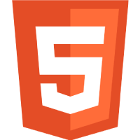

EHESP Conseil
After a design phase realized in close collaboration with the customers, I created this website using Wordpress and Divi. The website is maintanable, and easy to update.




After a design phase realized in close collaboration with the customers, I created this website using Wordpress and Divi. The website is maintanable, and easy to update.
I chose this exercise created by Front End Mentor to practice calling and manipulating an API using Javascript. And reminding a golden rule about a Mogwai is never superfluous.


A simple app, which allows you to rate a service, with the display of a thank you screen.

A pure HTML and CSS app, but quite demanding in terms of positioning and alignment.